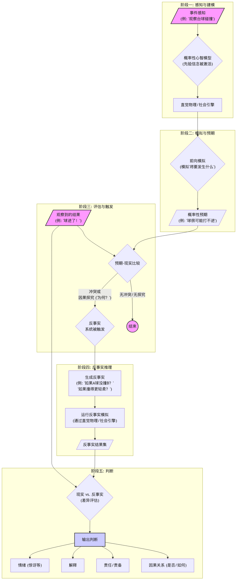

从"如果"到"如何"：Tobias Gerstenberg 研究中因果认知模型的整合与述评
摘要
本研究旨在系统性地梳理和整合认知科学家Tobias Gerstenberg在其高影响力作品中提出的关于因果认知、反事实推理和责任归因的核心理论模型。通过对"反事实模拟理论"、"概率性心智模型"与"直觉物理引擎"三大理论支柱的深度分析，本文论证了Gerstenberg工作的核心在于，构建了一个以"反事实心理模拟"为统一计算引擎的、具有广泛解释力的因果认知计算理论。该理论不仅统一了物理与社会领域的因果推理，更将其解释力延伸至道德判断、语言理解与人机交互等多个领域。本文首先阐述了该整合性框架的认知流程，随后探讨了其在不同领域的具体应用，并最终对其理论优势、潜在挑战（如计算资源合理性、个体与文化差异）及未来研究方向进行了批判性评价。研究认为，该框架为理解人类心智如何从观察离散事件到构建连贯因果世界提供了迄今最精细的理论地图，并为心理学、计算机科学与哲学的交叉融合提供了范式价值。
关键词: 因果认知, 反事实模拟, 计算模型, 责任归因, 理论述评, Tobias Gerstenberg
1. 引言
1.1 因果认知研究的核心挑战：从休谟问题谈起
对因果关系的理解是人类认知能力的基石，它不仅支撑着我们对物理世界的预测与干预，也塑造着我们的社会责任归因与道德判断（Sloman, 2005; Pearl & Mackenzie, 2018）。然而，从哲学源头看，理解人类如何建立因果认知本身就是一个深刻的挑战。大卫·休谟（David Hume）在18世纪提出的"休谟问题"揭示了这一困境：我们无法直接"感知"到因果关系本身，而只能观察到事件的恒常连结（constant conjunction）。例如，我们看到白球撞击黑球，随后黑球滚动，我们便推断出前者"导致"了后者。但这种推断的认知机制究竟是什么？这一问题构成了因果认知研究的起点。
传统的心理学研究试图通过识别影响因果判断的各种因素来回答此问题，例如事件的时间顺序、空间邻近性以及协变信息（Einhorn & Hogarth, 1986）。然而，这些因素往往只能提供相关性线索，却难以构建一个统一的、能够解释复杂情境的因果推理理论。尤其是在涉及多个潜在原因、结果被过度决定（over-determination）或存在预防性因果关系（preemptive causation）的场景中，简单的"but-for"反事实检验——即"若无此原因，便无此结果"——常常会失效（Lagnado, Gerstenberg, & Zultan, 2013）。例如，在一个行刑队中，多名士兵同时开枪，任何一名士兵的子弹都足以致命，此时我们很难用简单的反事实检验来确定"谁"是真正的"原因"。这些复杂的现实场景暴露了传统因果判断理论的局限性，呼唤一个更具解释力的认知模型。
1.2 计算建模的理论整合价值
近年来，认知科学领域的计算转向为此困境提供了新的突破口。通过构建形式化的计算模型，研究者得以将关于因果推理的各种假设转化为可被量化检验的精确预测。尤其是贝叶斯模型（Bayesian models）和基于结构模型的因果推理框架（structural causal models），为描述人类如何在不确定性下进行因果信念的更新与推理提供了强大的数学语言（Pearl, 2000; Griffiths & Tenenbaum, 2005）。
计算建模的价值不仅在于其精确性，更在于其强大的理论整合能力。它允许研究者将看似分散的因果现象——如物理世界的碰撞、社会场景的责任归因、甚至语言中的因果表达——置于一个统一的框架下进行分析。Tobias Gerstenberg及其合作者的工作正是这一路径的杰出典范。他们并非简单地罗列影响因果判断的因素，而是致力于构建一个统一的认知过程模型，其核心在于将人类的因果判断过程刻画为一种“反事实心理模拟”（counterfactual mental simulation）。这一模型不仅能够解释简单的因果感知，更能优雅地处理过度决定、预防和双重预防（double prevention）等困扰哲学与心理学多年的难题（Gerstenberg et al., 2021）。通过将抽象的因果推理问题转化为具体的、可计算的心理模拟过程，计算建模为整合不同层面的因果认知现象、构建一个连贯的理论体系提供了可能。
1.3 Gerstenberg 理论贡献的述评切入点
本述评旨在系统性地梳理并整合Tobias Gerstenberg在其一系列高影响力研究中所发展的因果认知理论。我们将论证，其理论贡献的核心在于提出了一个以"反事实模拟模型"（Counterfactual Simulation Model, CSM）为统一计算引擎的因果认知框架。这一框架巧妙地融合了哲学中关于因果性的两大理论传统：过程理论（process theories）与依赖理论（dependence theories）。过程理论强调因果关系中物理量的传递，而依赖理论则关注结果对原因的反事实依赖性。Gerstenberg的模型通过精巧的计算设计表明，这两种看似对立的观点，实际上可以被统一在"心理模拟"这一认知操作之下（Gerstenberg et al., 2021）。
具体而言，该模型主张，当人们判断一个事件是否为另一个事件的原因时，他们会在脑海中运行一个“直觉物理引擎”（intuitive physics engine），模拟"如果原因事件未发生，结果将会怎样？"。这种反事实模拟不仅关乎结果"是否"会发生（whether-causation），也关乎结果"如何"发生（how-causation）。例如，一个台球的撞击不仅决定了另一个球是否进洞，也决定了它以何种角度和速度进洞。通过对这些模拟结果与现实进行比较，人们最终形成关于因果强度、责任大小乃至道德许可性的判断。眼动追踪实验为其理论提供了有力的过程性证据，实验发现，当被试进行因果判断时，他们的目光会不自觉地追随物体在反事实世界中的虚拟轨迹（Gerstenberg, Peterson, Goodman, Lagnado, & Tenenbaum, 2017）。本文将以此为切入点，深入剖析其核心理论支柱，展示一个统一的因果认知计算理论是如何从"如果"的反思走向对现实世界"如何"运作的深刻理解。
2. 核心理论支柱的梳理
2.1 支柱一：反事实模拟理论 (Counterfactual Simulation Theory)
反事实模拟理论是 Gerstenberg 整个因果认知框架的基石。其核心思想简洁而深刻：人们对单个事件（token-level）的因果判断，本质上源于对"反事实"的心理模拟（Gerstenberg et al., 2021）。当我们探究"A是否导致了B"时，我们的大脑并非仅仅分析A与B之间的物理接触或时空关系，而是在一个内在的“心智模型”中进行模拟，比较"现实世界"与"如果A未发生，将会发生什么"的反事实世界。一个事件之所以被视为"原因"，关键在于它的存在与否，能够对结果产生显著的"改变"（difference-making）。
2.1.1 理论基础的文本分析
在理论的奠基性文献，特别是《心理学评论》上发表的《物理事件因果判断的反事实模拟模型》一文中（Gerstenberg et al., 2021），作者明确指出，该模型（Counterfactual Simulation Model, CSM）旨在统一因果判断研究中长期存在的两种对立观点：过程理论（process theories）和依赖理论（dependence theories）。过程理论强调原因与结果之间必须存在物理上的连续传递（如力的传递），而依赖理论则认为因果关系的核心在于结果对原因的反事实依赖性。CSM通过将这两种观点整合在一个统一的计算框架下，实现了理论上的超越。
CSM主张，人们的因果判断并非单一维度的，而是包含了多个可被量化的方面，这些方面都可以通过反事实模拟来揭示：
- 是否-因果（Whether-Causation）：这对应于传统的反事实依赖检验。模型通过模拟"移除"候选原因后的世界，来判断结果"是否"会发生质的改变（例如，球是否会进洞）。一个原因的"是否-因果"强度，取决于观察者在多大程度上相信，若无此原因，结果便不会发生。
- 如何-因果（How-Causation）：这捕捉了过程理论的核心关切。模型通过模拟对候选原因进行"微小扰动"（perturbation）后的世界，来判断结果发生的"方式"是否会改变（例如，球进洞的角度或时间）。一个原因即便不是结果发生的必要条件（即"是否-因果"强度很低），但只要它影响了结果呈现的方式，它仍然是一个重要的"如何-原因"。
- 充分性（Sufficiency）与鲁棒性（Robustness）：模型还通过更复杂的反事实操作来评估原因的充分性和鲁棒性。例如，通过模拟移除"其他"潜在原因后的世界，来判断当前原因是否"独立地"足以导致结果。
这一理论的精妙之处在于，它将模糊的哲学概念和心理直觉，转化为了可以在一个生成模型（generative model）——例如一个内置了牛顿物理学定律的“直觉物理引擎”——上进行的一系列精确的、可计算的"反事实操作"。因果判断不再是一个黑箱，而被刻画为一个结构化的、基于模拟的推理过程。
2.1.2 关键实验范式的总结
为验证反事实模拟理论，Gerstenberg及其团队设计了一系列精巧的实验范式，其中最具代表性的是基于动态物理碰撞场景（如台球碰撞）的研究。
在典型的实验中（Gerstenberg et al., 2021），被试会观看一段台球碰撞的动画，然后判断"球A是否导致了球B进洞"。实验设计的关键在于，研究者可以精确地控制"现实"与"反事实"世界。例如，通过设置静态障碍物或"传送门"，研究者可以创造出两组物理过程完全相同的动画（球A与球B的碰撞轨迹完全一致），但其反事实结果却截然不同。在一组动画中，如果移除球A，球B会因为撞到障碍物而无法进洞；而在另一组中，如果移除球A，球B则会顺利进洞。实验结果清晰地表明，尽管物理过程完全相同，被试的因果判断却显著不同，完全取决于反事实的结果。这为"因果判断依赖于反事实模拟"这一核心论点提供了决定性的证据。
为了进一步探索这一模拟过程的认知现实性，研究者引入了眼动追踪技术（Gerstenberg et al., 2017）。在这项里程碑式的研究中，被试在进行因果判断时，他们的眼球运动轨迹被精确记录下来。结果惊人地发现，被试的目光并不仅仅追随屏幕上发生的真实事件，而是会"自发地"扫向并停留在球B在反事实世界中"本应"经过的路径上。换言之，当大脑在进行因果推理时，眼睛已经"看到"了那个从未发生的虚拟世界。这一发现为反事实"心理模拟"的存在提供了直接的、过程性的证据，雄辩地证明了CSM不仅是一个"仿佛式"（as-if）的计算模型，更深刻地揭示了因果判断背后的真实认知加工过程。这些实验范式共同构成了一个强有力的证据链，证实了反事实模拟在因果判断中的核心地位。
2.2 支柱二：概率性心智模型 (Probabilistic Mental Models)
如果说反事实模拟理论解决了"如何"进行因果判断的机制问题，那么概率性心智模型则回答了在不确定性下，模拟的"内容"从何而来的问题。Gerstenberg 的理论框架并非假设人们拥有一个全知全能的、确定性的物理模拟器，而是认为这个模拟器本质上是概率性的。这意味着，我们对世界的内在模型充满了不确定性，而因果判断正是在这种不确定性之上，通过贝叶斯推理（Bayesian inference）进行的信念更新过程。
2.2.1 理论基础的文本分析
Gerstenberg 及其合作者在一系列研究中明确指出，期望（expectation）是影响责任判断的关键变量（Gerstenberg et al., 2018）。当一个行动的结果符合我们的期望时，我们学到的新信息有限；而当结果"出乎意料"时，我们则会进行更深入的归因，更新我们对行动者或情境的认知模型。
这一过程被精确地刻画为一个贝叶斯推断过程。观察者在观察到一个行动前，对行动者有一个先验信念（prior belief），即认为他可能是"有技巧的"（skilled）、"普通的"（average）或"无技巧的"（unskilled）。在观察到行动者的选择（例如，一位门将扑向了一个小概率的方向）及其结果（成功扑救）后，观察者会根据"什么样的行动者最有可能做出这样的行为并导致这样的结果"来更新自己的信念，形成一个后验信念（posterior belief）。
在"幸运还是聪明？"（Lucky or clever?）这一关键研究中（Gerstenberg et al., 2018），该模型清晰地阐述：当一个出乎意料的行动导致了积极结果时（例如，门将扑向了小概率方向并成功救球），观察者会大幅提升对该行动者是"有技巧的"这一信念的概率。因为一个"有技巧的"行动者能够洞察到表层概率信息之下的真实情况。反之，如果一个出乎意料的行动只是源于纯粹的随机猜测（例如，在一个抽奖游戏中选择了小概率选项并中奖），那么这个积极结果并不会让观察者认为行动者"有技巧"，反而可能认为他只是"幸运"或"鲁莽"。因此，责任和赞扬的大小，取决于行动在多大程度上让我们对行动者的未来表现产生了更积极的预期。
2.2.2 与反事实理论的融合
概率性心智模型并非独立于反事实模拟理论，而是为其提供了至关重要的输入和权重。二者的融合体现在以下两个层面：
- 为反事实模拟设定先验：在我们进行心理模拟之前，我们对世界可能的状态有一个概率性的预期。例如，在模拟台球碰撞时，我们知道球的运动轨迹会受到摩擦力、初始速度等多种不确定性因素的影响。这个内在的"物理引擎"本身就是一个概率模型，它为反事实模拟提供了不同结果可能性（possible outcomes）的概率分布。当我们判断一个碰撞是否"导致"了进球时，我们比较的不仅仅是"发生"与"未发生"这两个点，而是在一个充满了概率性扰动的模拟空间中，比较一个原因的存在与否，能在多大程度上改变最终结果的概率分布。
- 解释期望如何调节因果判断：期望的打破（violation of expectation）会触发更深度的反事实思考。当一个事件符合我们基于概率模型的预期时，我们通常不会深入探究其原因。然而，当一个低概率事件发生时（例如，一个新手打出了完美的斯诺克），我们会自发地进行反事实思考："如果他不是新手，会怎么样？"或者"如果当时的角度稍有偏差，会怎么样？"。这种由概率期望触发的反事实思考，将归因过程引向对行动者内在特质（如技巧、意图）或情境偶然性的探索，从而将概率推理与反事实模拟紧密地联系在一起。
综上所述，概率性心智模型为反事实模拟理论注入了处理不确定性的能力。它通过贝叶斯推断，将对行动者的特质归因（dispositional inference）与对事件的因果归因（causal attribution）联系起来，使得整个理论框架能够解释为何同样的因果结构，会因为我们对行动者先验期望的不同，而产生截然不同的责任判断。
2.3 支柱三：直觉物理引擎 (Intuitive Physics Engine)
直觉物理引擎是连接抽象的因果推理与具身的感知世界的桥梁，是反事实模拟得以运行的"硬件基础"。Gerstenberg 的理论主张，人类在进行因果判断，尤其是涉及物理事件时，并不仅仅是在进行逻辑符号的推理，而是在大脑中调用了一个内在的、近似牛顿物理学的模拟器（an intuitive physics engine），来预测事件的动态发展过程（Gerstenberg & Tenenbaum, 2017）。这个引擎构成了反事实模拟最底层的计算核心。
2.3.1 理论基础的文本分析
在反事实模拟模型（CSM）的计算实现中，这个直觉物理引擎扮演了关键角色。当模型需要判断"如果A球没有撞击B球，B球会怎么样？"时，它正是通过这个物理引擎来生成（sample）反事实世界中的B球轨迹。这个引擎并非完美无缺，它是一个带"噪声"的概率性模拟器（noisy Newtonian physics engine），能够反映出人们在物理预测中的不确定性。例如，在预测一个运动中的物体未来的位置时，我们的内在模拟会产生一个概率分布，而不是一个单一、确定的点。
在"眼动追踪因果关系"（Eye-Tracking Causality）这一关键研究中（Gerstenberg et al., 2017），研究者们为这个内在模拟过程提供了强有力的实证证据。实验中，被试需要观看两个小球碰撞后其中一球是否进洞的动画，并判断碰撞的因果关系。通过高精度眼动追踪，研究发现被试的视线轨迹与CSM模型的预测高度吻合：
- 追踪反事实轨迹：当判断一个碰撞是否"导致"了进球时，被试的眼睛会自发地追踪"如果碰撞未发生，球将会去向何方"的反事实路径。
- 模拟微扰动：当判断碰撞"如何"导致进球时（how-causation），被试的眼睛则会聚焦于碰撞点周围，模拟对撞击角度或时间进行微小扰动后，球的轨迹会发生何种变化。
这些眼动数据雄辩地证明，反事实思考并非一个纯粹抽象的逻辑过程，而是一个具身的、基于视觉空间表征的动态模拟过程。直觉物理引擎正是实现这种动态模拟的认知组件。
2.3.2 物理推理与社会推理的统一
直觉物理引擎的重要性远不止于解释台球碰撞这类简单的物理场景。Gerstenberg 的理论框架暗示，这个为理解物理世界而演化出的底层模拟机制，可能被认知系统"挪用"（co-opted），以支持更高级的社会推理。
这种统一性体现在，许多社会场景中的责任判断，其核心结构与物理因果判断是同构的。例如，判断一个团队项目失败的责任归属，我们需要模拟"如果成员A按时完成了他的部分，项目会成功吗？"。这个过程虽然涉及的是人的行动而非物理客体，但其计算本质——即通过改变一个变量来观察其对最终结果的影响——与物理场景的反事实模拟如出一辙。
更深层次的联系在于，社会互动本身也常常在物理世界中展开。理解一位篮球运动员的传球失误，不仅需要理解他的"意图"（社会认知），也需要我们内在的物理引擎去模拟"如果他传球的力量再大一点，球的轨迹会如何"（物理认知）。因此，直觉物理引擎可以被看作是一个更为通用的模拟平台，它为我们理解和推理包括他心智、意图、责任在内的复杂社会现象，提供了最基础的、关于"世界如何运作"的动力学模型。这为构建一个从底层物理感知到高层社会归因的统一因果认知理论，奠定了基础。
3. 理论框架的整合与应用
3.1 一个整合性框架的提出
为了系统性地整合上述三大理论支柱，我们提出了一个统一的因果认知计算框架（见图 1）。该框架将因果判断描绘为一个动态的、分阶段的认知过程，其核心在于预测性模拟与事后反事实推理之间的精妙互动。
图 1. 因果认知的整合性计算框架
图注。该整合框架将三大理论支柱融合成一个五阶段的认知工作流。过程始于阶段一，外部事件的感知激活了一个概率性心智模型，包括直觉物理或社会引擎。在阶段二，该引擎运行前向模拟，以生成关于结果的概率性预期。阶段三是关键的评估阶段，将预期结果与实际结果进行比较。当出现不匹配或明确的因果探究时，将触发反事实系统。在阶段四，系统通过修改初始模型的关键参数来生成和模拟替代情景。最终，在阶段五，现实世界和反事实模拟的输出被比较，以产生一系列丰富的判断，包括对因果关系、责任的评估以及如惊讶等情绪反应。
如图 1 所示，该整合框架将因果认知概念化为一个动态的多阶段过程，而非单一的判断行为。该模型的关键贡献在于，它形式化了预测性加工与事后反事实模拟之间的相互作用。它假定，我们的认知系统在持续地对世界产生预期（阶段二）；而正是这些预期的被违背，构成了触发更深层、计算成本更高的因果分析（阶段三和阶段四）的主要原因。这种架构为一个资源有限的系统如何能有效地驾驭复杂世界，提供了一个认知上貌似合理的解释——它仅将强大但高成本的模拟能力，分配给那些令人惊讶或需要解释的情境。此外，模型的最终阶段（阶段五）优雅地展示了单一的比较过程——即现实与其替代方案的对照——如何能够产生多样化的输出，从对因果关系的"冷"认知评估，到责备或惊讶等"热"情绪反应，从而统一了那些以往常被孤立研究的现象。此流程图构成了本述评的核心理论地图，阐明了格斯滕伯格工作的核心组成部分如何融合成一个连贯而强大的心智理论。
3.2 理论应用领域的拓展分析
3.2.1 在道德判断中的应用
该整合框架最富有成效的应用领域之一，是解释复杂的道德判断现象。传统的道德心理学模型常常将因果判断与道德评价（如意图、过错）视为分离的模块。然而，Gerstenberg 参与并推动的研究表明，二者是深度交织的：我们对一个行为的道德评价，会反过来影响我们对其因果作用的判断，这一现象被称为"有罪责的控制"（culpable control; Alicke, 2000; Alicke et al., 2015）。
Gerstenberg 的整合框架为这种现象提供了机制性的解释。当我们将框架中的“直觉物理引擎”替换或补充为"直觉社会与心理理论模型"时，它便能模拟社会互动的结果。在这个社会模型中，行动者的"类型"不再仅仅是"有技巧/无技巧"，而是扩展到了"善意/恶意"等道德维度。
该框架能够解释"道德运气"（moral luck）这一经典难题。例如，两位司机都同样疏忽地闯了红灯，但一位司机安然无事，另一位则不幸撞伤了行人。尽管他们的主观过错（mental state）相同，但后者通常会受到更严厉的道德谴责。整合框架通过反事实模拟解释了这一点：对于撞伤行人的司机，一个"近在咫尺"的反事实世界（"如果他当时遵守了交通规则"）与现实世界的结果差异巨大，因此他的行为被赋予了更强的因果权重，从而导致了更重的道德谴责。
此外，该框架还能解释在"副作用效应"（side-effect effect）等情境中，为何人们会更倾向于认为一个公司的CEO"有意地"损害了环境（当损害是其逐利行为的副作用时），而不是"有意地"帮助了环境（当帮助是副作用时）。这是因为在我们的社会心智模型中，"恶意"的行动者通常被认为会对潜在的负面后果表现出更强的容忍度。当观察到一个负面副作用时，贝叶斯推断过程会提升对该行动者是"恶意"或"冷漠"类型的后验信念，从而使得这个副作用看起来更像是其"意图"的一部分。
因此，这个整合框架将因果、意图、和道德评价置于一个统一的、基于模拟的推理过程中，论证了道德判断在很大程度上是一种特殊的、富含社会性先验知识的因果推理。
3.2.2 在语言理解中的应用
该整合框架的解释力超越了对孤立事件的判断，延伸到了对人类语言中因果与反事实表达的深层理解。语言并非一套任意的符号系统，其语义（meaning）深深地植根于我们的认知模型之中。该框架揭示了，诸如"本可以"、"差点就"（almost）、"几乎"等词汇的意义，正是由底层的反事实心理模拟所赋予的。
当我们理解"那辆车差点就撞到行人了"这句话时，我们的大脑所做的，远不止是检索"差点"这个词的字典定义。相反，这句话会立即触发我们的直觉物理引擎，去模拟一个与现实世界"最小差异"的反事实世界——在这个世界里，汽车的轨迹、速度或行人的位置发生了微小的改变，导致了碰撞的发生。我们之所以能理解"差点"的含义，是因为我们的认知系统能够量化现实世界与这个"近在咫尺"的灾难性反事实世界之间的距离。
Gerstenberg 的研究表明，对"差一点"（near miss）事件的感知，其计算原理与因果判断同源。一个事件被认为是"差一点"发生，当且仅当一个对现实世界的微小、且符合物理规律的扰动（a small, physically plausible perturbation）就会导致该事件的发生。这解释了为何一个离球门一毫米擦过的射门，比一个离球门十万八千里的射门，更让我们感到"惋惜"或"惊险"——因为前者只需要一个极小的反事实改变就能变为进球。
因此，该框架为认知语言学和语义学提供了一个强大的新工具。它主张，语言理解不是一个被动的解码过程，而是一个主动的、基于模拟的推理过程。我们通过在内在的心智模型中运行模拟，来"体验"和"领会"语言所描述的情境及其反事实的可能性，从而构建起丰富的语义理解。这为连接抽象的语言符号与具身的认知体验，提供了一条坚实的计算路径。
3.2.3 在人机交互中的应用
最后，该整合框架对构建可解释性人工智能（Explainable AI, XAI）具有深远的启示。当前XAI领域的一个核心挑战是，许多"可解释"模型提供的解释（如特征重要性热力图）在技术上是透明的，但在认知上却常常是难以理解和不令人信服的（Vasconcelos et al., 2023）。
Gerstenberg 的理论框架指出了一条通往真正"认知相容"（cognitively compatible）的可解释性的路径。该框架主张，一个好的解释，本质上是一个好的"反事实叙事"。人类并非通过检查一个复杂系统的所有内部参数来理解其决策，而是通过抓住关键的"反事实支点"（counterfactual pivot points）来建立因果认知。
据此，一个真正可解释的AI，应当能够回答以下类型的反事实问题：
- "如果……会怎样？"（What if...?）：AI应能模拟，如果某个关键输入特征不同（例如，申请者的收入再高一千元），其决策结果（例如，贷款是否批准）是否会改变。这直接对应了"是否-因果"的判断维度。
- "为何不是……？"（Why not...?）：当AI给出一个决策A而非用户期望的B时，它应当能解释，需要对输入进行何种改变，才能使得决策从A变为B。这能帮助用户理解决策边界，建立信任。
- "需要多少改变？"（How much to change?）：AI应能揭示其决策的"鲁棒性"，即输入特征需要在多大程度上变化，才会导致决策的翻转。这对应了"如何-因果"的判断维度，让用户理解决策的敏感性。
近期关于人机交互的研究也证实了这一思路。当AI的解释能够显著降低用户验证其建议的认知成本时，用户才更有可能认真对待解释，从而减少对AI的盲目过度依赖（Vasconcelos et al., 2023）。能够生成简洁、切中要害的反事实解释的AI，正是通过提供这种"认知捷径"，来帮助人类伙伴建立准确的信任和高效的合作。
因此，将Gerstenberg的因果认知模型作为设计原则，有望引导XAI的发展从"模型透明化"走向"认知可解释化"，即创造出能够用人类理解因果关系的语言——反事实模拟的语言——与我们进行交流的AI伙伴。
4. 批判性评价与未来展望
4.1 理论的优势与解释力
该整合框架最核心的优势在于其强大的理论统一性与预测精确性。
首先，它通过"反事实心理模拟"这一核心机制，成功地将因果认知研究中多个看似分离的领域——从底层的物理事件感知，到中层的责任归因，再到高层的道德判断与语言理解——整合在一个统一的计算框架之下。它不仅弥合了因果判断研究中过程理论（process theories）与依赖理论（dependence theories）的长期对立，更提供了一个"生成式"（generative）的理论蓝图：通过替换或丰富底层的"模拟引擎"（例如，从物理引擎到社会心理引擎），该框架能够被灵活地应用于解释极为广泛的认知现象。
其次，作为一种计算模型，该框架超越了许多传统心理学理论的模糊描述，能够做出可被量化检验的精确预测。无论是通过行为实验中被试的责任评分，还是通过眼动追踪实验中视线停留的时间与轨迹，模型的预测都与经验数据高度吻合。这种将抽象的认知理论与可计算的、可证伪的模型相结合的研究范式，代表了认知科学发展的最前沿方向，极大地提升了理论的科学严谨性。
4.2 潜在的挑战与开放问题
4.2.1 计算资源合理性质疑
对所有基于模拟的认知理论而言，"计算开销"（computational cost）或"认知负荷"（cognitive load）问题是其面临的最核心挑战。该框架假设，人们在进行因果判断时，会在大脑中运行（可能多次）带噪声的物理或社会模拟。这在计算上是极为昂贵的。一个关键的质疑是：人类认知系统是否真的拥有如此巨大的计算资源，来为日常生活中无数的因果判断进行这般复杂的模拟？
尽管模型在受控实验中表现优异，但其在现实世界中的"认知可行性"（cognitive plausibility）仍有待阐明。大脑很可能并不会进行完全的、穷尽式的模拟，而是采用了一系列高效的启发式算法（heuristics）或近似计算（approximations）来降低计算负荷。例如，只在预期被严重打破时才启动深度模拟，或者只模拟少数几个最可能的反事实世界。未来的研究需要更深入地探讨这些"认知捷径"是什么，以及它们是如何在保证判断效率的同时，维持足够准确性的。
4.2.2 个体与文化差异问题
该框架的另一个潜在局限在于其普适性。目前支撑该理论的绝大多数经验证据，都来自于"WEIRD"（西方的、受过教育的、工业化的、富裕的、民主的）被试群体。然而，因果归因的方式在很大程度上受到文化背景、个人经验和专业知识的影响。
例如，在更强调集体主义或宿命论的文化中，人们在进行反事实思考时，可能会更倾向于改变情境变量而非个人选择。一个领域的专家（如一位专业的物理学家或律师）与一个普通人，其内在的“直觉引擎”在模拟的精确度和侧重点上，也可能存在巨大差异。此外，个体的认知风格、工作记忆容量等因素，也可能影响其进行心理模拟的深度与广度。因此，当前这个"一刀切"的模型是否能捕捉这些丰富的个体与文化差异，或者说，模型的哪些参数（如先验信念、模拟的噪声水平）是需要根据不同人群进行调整的，这是一个亟待通过跨文化、跨群体研究来回答的重要问题。
4.3 未来研究方向的展望
- 神经机制的验证：利用神经影像学技术（如fMRI, MEG）是检验心理模拟"认知可行性"的直接路径。未来的研究可以设计实验，探究当人们进行因果判断时，大脑中与运动规划、情景记忆、未来想象等相关的区域（这些区域被认为是支持模拟功能的神经基础）是否会被激活。这能为"心理模拟"这一核心假设，提供来自大脑硬件层面的直接证据。
- 开发更复杂的计算模型：当前的模型大多处理的是相对简化的、结构清晰的场景。未来的计算模型需要尝试处理更贴近现实世界的复杂因果结构，例如，包含多个相互作用的智能体、存在长程时间依赖、信息不完全的场景。一个有潜力的方向是，将该框架与大型语言模型（LLMs）相结合，利用LLMs强大的世界知识与常识推理能力，来为心理模拟提供更丰富、更符合现实的先验与情境表征。
- 系统的跨文化与发展心理学研究：为了检验模型的普适性并探索其边界，系统的跨文化比较研究与发展心理学研究至关重要。例如，因果与反事实推理能力在儿童的成长过程中是如何发展的？不同文化背景的个体，在面对同样的道德困境时，其反事实思考的模式是否存在系统性差异？这些研究将极大地丰富我们对人类因果认知多样性的理解。
5. 结论
本文系统性地梳理、整合并评价了Tobias Gerstenberg及其合作者在因果认知领域的核心理论贡献。通过对三大理论支柱——反事实模拟理论、概率性心智模型与直觉物理引擎——的深度分析，我们论证了其工作的核心在于，构建了一个以"反事实心理模拟"为统一计算引擎的、具有广泛解释力的因果认知计算理论。
该理论的卓越之处在于，它将对"如果……"（What if）这一反事实问题的回答，置于人类理解"如何"（How）与"为何"（Why）的核心。它不仅在形式上统一了对物理世界和社会世界的因果推理，更在机制上揭示了从事件感知到责任归因，再到道德判断与语言理解的内在认知流。通过将这一理论应用于道德心理学、认知语言学与人机交互等领域，我们进一步展示了其作为一种"生成式"理论框架的巨大潜力。
尽管面临着关于计算开销与文化普适性的挑战，但Gerstenberg的理论框架无疑为我们理解人类心智最核心的能力之一——因果推理——提供了一张迄今为止最精细、最富启发性的理论地图。它有力地证明，通过严谨的计算建模与巧妙的实验设计的结合，我们能够逐步揭开人类如何从观察离散的事件，构建起一个连贯、深刻且充满意义的因果世界之谜。最终，该工作不仅是认知科学内部的一次重要理论整合，更是在心理学、计算机科学与哲学之间，架起了一座至关重要的桥梁。
参考文献
- Alicke, M. D. (2000). Culpable control and the psychology of blame. Psychological Bulletin, 126(4), 556–574. https://doi.org/10.1037/0033-2909.126.4.556
- Alicke, M. D., Mandel, D. R., Hilton, D. J., Gerstenberg, T., & Lagnado, D. A. (2015). Causal conceptions in social explanation and moral evaluation: A historical tour. Perspectives on Psychological Science, 10(6), 790–812. https://doi.org/10.1177/1745691615598322
- Einhorn, H. J., & Hogarth, R. M. (1986). Judging probable cause. Psychological Bulletin, 99(1), 3–19.
- Gerstenberg, T., Goodman, N. D., Lagnado, D. A., & Tenenbaum, J. B. (2021). A counterfactual simulation model of causal judgments for physical events. Psychological Review, 128(5), 936–975. https://doi.org/10.1037/rev0000281
- Gerstenberg, T., Peterson, M. F., Goodman, N. D., Lagnado, D. A., & Tenenbaum, J. B. (2017). Eye-tracking causality. Psychological Science, 28(12), 1731-1744. https://doi.org/10.1177/0956797617713053
- Gerstenberg, T., & Tenenbaum, J. B. (2017). Intuitive theories. In M. Waldmann (Ed.), Oxford handbook of causal reasoning (pp. 515-548). Oxford University Press.
- Gerstenberg, T., Ullman, T. D., Nagel, J., Kleiman-Weiner, M., Lagnado, D. A., & Tenenbaum, J. B. (2018). Lucky or clever? From expectations to responsibility judgments. Cognition, 177, 120–141. https://doi.org/10.1016/j.cognition.2018.04.004
- Griffiths, T. L., & Tenenbaum, J. B. (2005). Structure and strength in causal induction. Cognitive Psychology, 51(4), 334–384.
- Lagnado, D. A., Gerstenberg, T., & Zultan, R. (2013). Causal responsibility and counterfactuals. Cognitive Science, 37(6), 1036–1073. https://doi.org/10.1111/cogs.12042
- Pearl, J. (2000). Causality: Models, reasoning, and inference. Cambridge University Press.
- Pearl, J., & Mackenzie, D. (2018). The book of why: The new science of cause and effect. Basic Books.
- Sloman, S. (2005). Causal models: How people think about the world and its alternatives. Oxford University Press.
- Vasconcelos, H., Jörke, M., Grunde-McLaughlin, M., Gerstenberg, T., Bernstein, M. S., & Krishna, R. (2023). Explanations can reduce overreliance on AI systems during decision-making. Proceedings of the ACM on Human-Computer Interaction, 7(CSCW1), 1–38. https://doi.org/10.1145/3579605